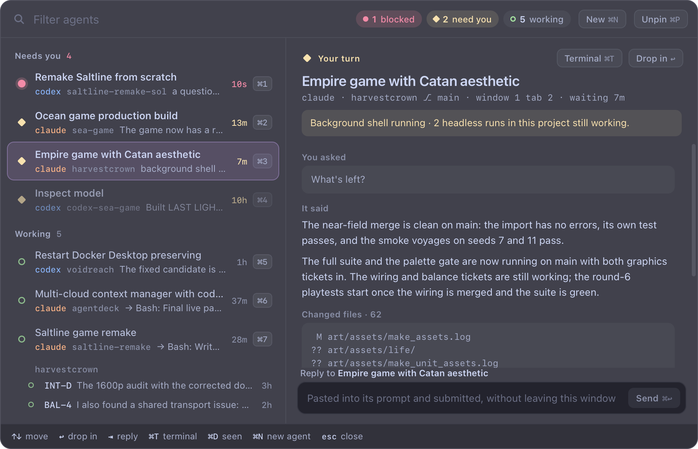
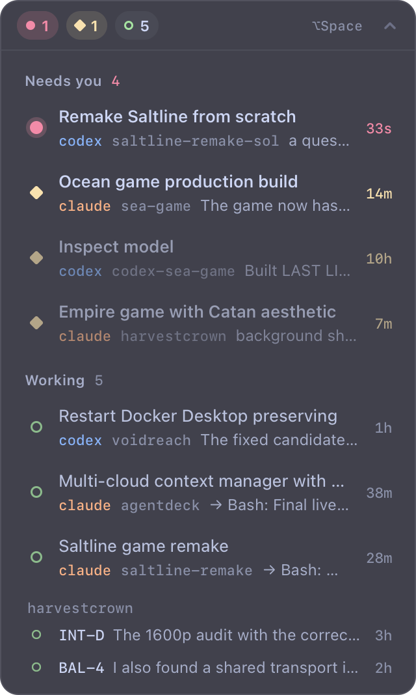
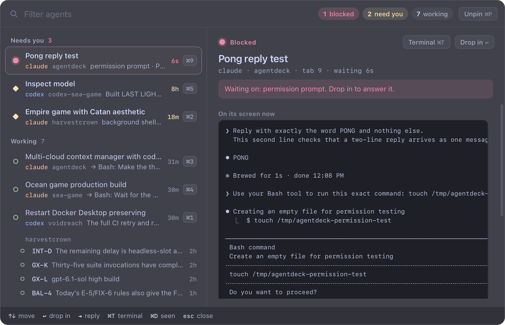
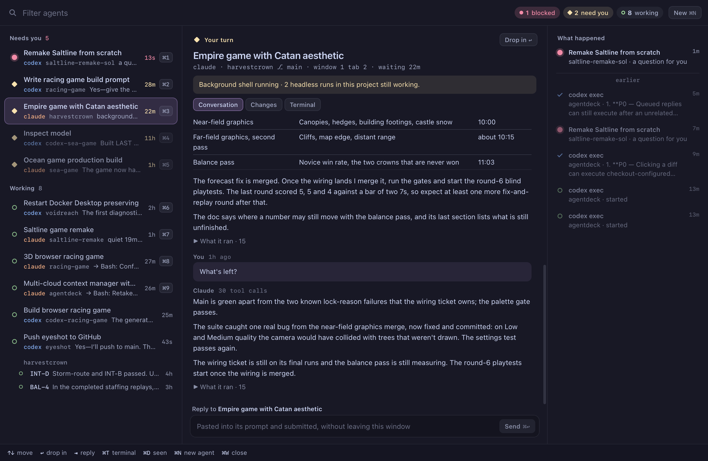
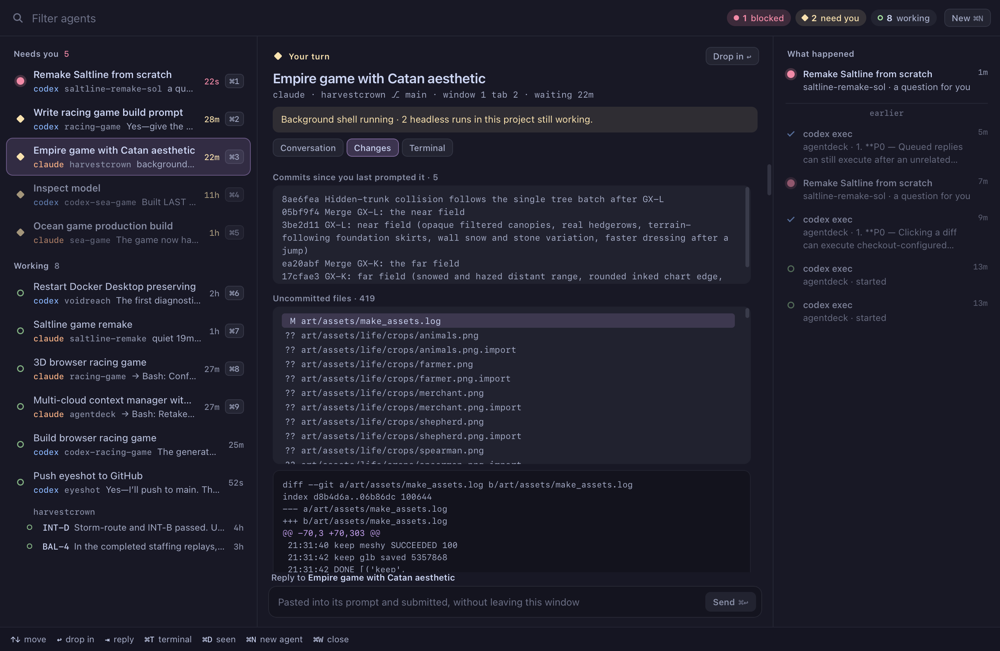
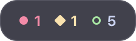
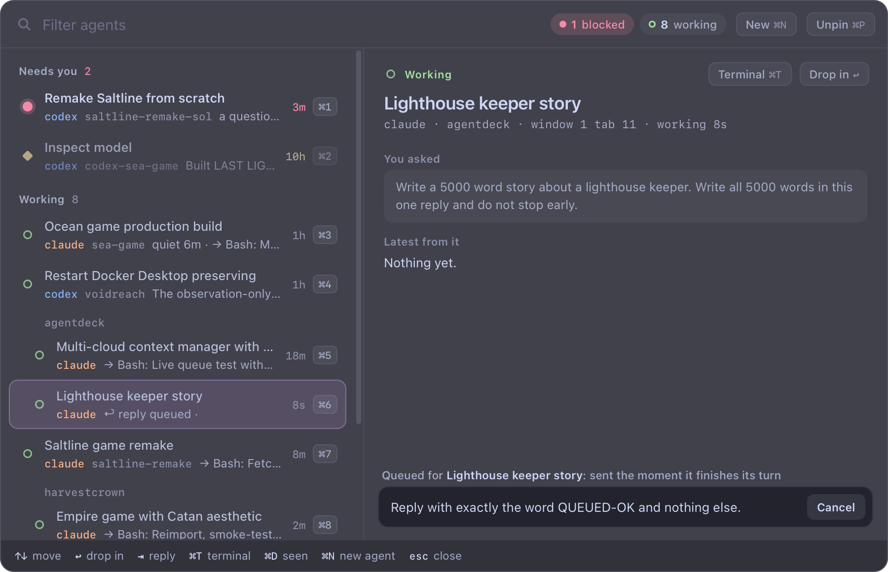
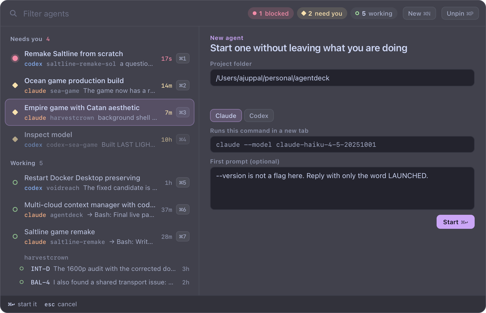

The question: what did I build, and how do you use it?
Agentdeck floats over your terminal, shows every agent and who is waiting on you, and lets you answer without switching tabs.
Press ⌥Space from any app. It lists every Claude Code session, Codex session and headless Codex run,
drops you into any of them with one key, and can type your reply into an agent's prompt for you.
Underneath it is ag, the command-line tool from the first round, which still works on its own.
The deck
Real captures from the app running on your machine today. Agents that want you are always on top, whatever project they belong to; working agents are grouped by project underneath; headless runs that finish stay listed for half an hour.


| Key | What it does |
|---|---|
| ⌥Space | Open or close the deck, from any app. In WezTerm, Ctrl+A then Space does the same. |
| ⌥⇧Space | Go to whoever needs me. Drops you straight into the most urgent agent you have not dealt with, without opening anything. Press again for the next one. |
| ↑↓ | Move through the agents. Typing filters the list. |
| ↩ | Drop in: switch WezTerm to that agent's tab and bring it forward. |
| ⌘1–9 | Drop into the agent carrying that number. Numbers are handed out when the deck opens and stay put until you close it, whatever window the tab is in. |
| ⇥ then ⌘↩ | Go to the reply box, then send. If the agent is busy, the reply is queued for the end of its turn. Return alone adds a line. |
| ⌘N | Start a new agent in a new tab, in the background. |
| ⇧⌘↩ | Paste the reply into its prompt without submitting, and drop in to look at it. |
| ⌘T | Show what is on that agent's terminal right now, without going there. |
| ⌘D | Mark as seen. It dims, sinks, and leaves the menu-bar count until that agent stops again. Dropping in or replying does this for you. |
| ⌘P | Pin or unpin the strip. |
| Menu bar | The count (◆ yours, ● blocked) toggles the deck. Right-click it for pin, open at login and quit. |

The dashboard: when you want the detail
The pill and the deck are for glancing and switching. The dashboard is the same agents in an ordinary resizable window, for when you want to understand what one of them did before you answer it. Open it with ⌘⇧D from the deck, the Dashboard button, or the menu-bar menu; close it like any window and the pill comes back. Everything in the deck still works here: drop in, reply, queue, new agent.


Terminal
The agent's actual screen, refreshed while you watch, without switching to its tab.
What happened
The column on the right is a running log: who handed back, who got blocked, which headless runs started and ended. Anything since you last opened the dashboard is bright; older entries are dimmed. Click one to select that agent. It starts empty and fills from now on.
Added after your feedback
You asked for a smaller footprint, a straight click-through, and several WezTerm windows. The rest comes from looking at what cmux, herdr and Conductor do well: a one-key jump to whatever is unread, typing ahead to a busy agent, starting an agent without leaving your work, and seeing what an agent changed.
Fold it to a pill

The ▴ in the strip's header folds it down to its counts. Click the pill to unfold it. Its border turns yellow when something new is waiting and red when an agent is blocked. Drag the pill or the strip by its header to put it anywhere; it remembers.
Several WezTerm windows
Agents in every window are listed together, and dropping in raises the right window, not just the right tab. WezTerm's command line cannot raise a window on its own, so a five-line hook in ~/.wezterm.lua does it. Measured on your two windows: the other window came forward in about a quarter of a second.
In ag, tabs are named window.tab when there is more than one window (ag go 2.3).
Codex questions now show as blocked
Your saltline Codex session had a question pending while it kept working, and the deck was showing it as busy. Codex flags this in its tab title ("Action Required"); the deck now reads that and shows the agent as blocked with "a question for you". It caught that real session as soon as the rule went in.


claude --dangerously-skip-permissions, personalcodex --yolo); edit the line and it remembers.What it changed
For an agent working in a git repository, the deck shows the branch and, under its last message, what git status reports there (the first capture on this page shows 62 changed files in harvestcrown). It is read only when you select that agent, and never takes a lock an agent could trip over. A working agent whose log has not moved for five minutes is marked "quiet", which is usually a long command and occasionally a hang.
Replying without switching, and when it refuses
The reply box types into the agent's terminal for you: it pastes your text into its prompt and presses Return. Typing into the wrong place would be worse than not typing, so it only goes ahead on proof.
Underneath: type ag and you get this
The deck reads its data from this command. Real output from your machine, captured 4 October 2026 at 09:47. Agents that need you are always on top, longest-waiting first.
ag2 need you · 3 working TAB STATE FOR AGENT PROJECT WHAT5 ◆ your turn 6h codex codex-sea-game Inspect model (+2 subagents) — Built **LAST LIGHT**, a complete 3D ocean rescue game…4 ◆ your turn 5h claude sea-game Ocean game production build — IRONWAKE is built and playable: a naval combat game…2 ⠿ working 1m claude personal Empire game with Catan aesthetic — Interface ticket merged. Now the rules ticket.1 ⠿ working 1m codex voidreach Restart Docker Desktop preserving (+3 subagents) — The Linux backup-suite run…3 ⠿ working 1m claude personal Multi-cloud context manager with codec agents — Confirmed: `git` (2.54.0) and…Reading a row
The tab's position in WezTerm's tab bar, so ⌘5 gets you there. A dash means the agent has no WezTerm tab (a headless run, or another terminal).
One of three: ● BLOCKED, ◆ your turn, ⠿ working. Explained in the next section.
How long the agent has been in that state. "your turn 6h" means it finished six hours ago and nobody has replied.
claude is a Claude Code session, codex an interactive Codex session, exec a headless Codex run with no window (your run_codex.sh tickets).
The folder the agent was started in. A session started in ~/personal shows as "personal" even if it works elsewhere; the title tells you what it is really about.
The session's title, then the first line of the last thing it said. For headless runs: ticket, model and mode. "+2 subagents" counts helper threads a Codex session has spawned.
Three states, and only two of them want you
An agent is either busy, finished, or stuck. The glyph and the word carry the meaning, so the colour is a bonus and never the only signal.
● BLOCKED go now
Half-done work is parked on a dialog or a question. Sorted first, and the only state whose notification plays a sound.
◆ your turn when you can
The agent finished and handed back. If it says "background shell running", the turn is over but a shell it started is still alive: either a watcher it will wake up on, or just a dev server. ag cannot tell which, so it shows it to you.
⠿ working ignore
Busy. The WHAT column shows its latest narration, or the tool it is running when it has not said anything recently.
The loop: from hand-back to reply
This is the whole habit. Keep ag watch open in one tab and the rest follows.
Jumping
Ctrl+A then n takes you to the most urgent agent that needs you: blocked ones first, then the one that has waited longest. Press it again from there to move to the next. If nothing needs you it does nothing.
From a shell, ag next is the same thing and ag go 4 goes to tab 4.
Watching
Ctrl+A then a opens ag watch in a new tab: the table, redrawn every two seconds. Ctrl+C closes it.
While it is open, a macOS notification fires the moment any agent stops working. Close the tab and the notifications stop.
Recap before you switch
Re-reading scrollback is the expensive part of switching. ag peek prints what you last asked and how the agent answered, for one tab or for every agent that needs you. Real output, shortened where marked:
ag peek 5 ── tab 5 · codex · codex-sea-game · ◆ your turn 6h · Inspect model (+2 subagents)you asked: You can use the blender MCP tooit said: Built **LAST LIGHT**, a complete 3D ocean rescue game with a custom Blender vessel, reflective waves, … **[Play now](http://localhost:4173)** — recover three survivors and bring them safely to harbor. All **8 acceptance criteria passed**: … (the reply continues, up to 1,500 characters)Every command
Nine commands and two key chords. The last column says how each was checked, so you know which ones you are the first to try.
| Command | What it does | Reach for it when | Checked |
|---|---|---|---|
ag | Prints the table once. | You sit down, or come back from a break. | verified live |
ag watch | The table, redrawn every 2 seconds, plus hand-back notifications. | Agents are running and you want a dashboard tab. | verified live |
ag peek | Recap for every agent that needs you: your last ask, its reply. | Deciding which agent to deal with first. | verified live |
ag peek 5 | The same recap for tab 5 only, whatever its state. | Checking on one agent without leaving your tab. | verified live |
ag next | Jumps to the most urgent agent that needs you; repeat to cycle. | You are in a shell and want to start clearing the queue. | verified live |
ag go 4 | Jumps to tab 4. | You already know where you want to be. | verified live |
ag check | Runs the built-in self-test and prints "ok". | After anyone edits the file. | verified live |
ag send ID | Pastes standard input into that agent's prompt and presses Return, with the checks described under Replying. | Scripting a reply; it is what the deck's reply box calls. | verified live |
ag stream | Everything ag knows, as one JSON line every 2 seconds. | You don't; the app runs it. | verified live |
| Ctrl+A n | Runs ag next from any tab. | All the time. This is the main one. | not pressed yet |
| Ctrl+A a | Opens ag watch in a new tab. | Starting a session with several agents. | not pressed yet |
"Not pressed yet": WezTerm lists both chords in its key table, and the command each one runs was tested in the same bare environment WezTerm uses. I cannot press keys, so you are the first to try the chords themselves.
How it knows
ag adds nothing to your agents: no hooks, no wrappers, no daemon. Each time it runs it reads what Claude Code, Codex and WezTerm already write down, then exits.
| What ag needs | Where it reads it |
|---|---|
| Claude: state and how long | ~/.claude/sessions/<pid>.json, fields status, waitingFor, statusUpdatedAt |
| Claude: title, last ask, last reply | the last 4 MB of ~/.claude/projects/*/<sessionId>.jsonl |
| Codex: which log belongs to which process | lsof -c codex, looking for open files under $CODEX_HOME/sessions |
| Codex: state and last reply | the last task_started or task_complete event in that log |
| Codex: your last ask | $CODEX_HOME/history.jsonl |
| Headless run: its name | the parent command, run_codex.sh <ticket> … |
| Tab number | wezterm cli list, matching each agent's terminal device to a tab |
These are Claude Code's and Codex's own internal files, not a published interface. If an update changes them, ag will show wrong or missing rows, and that is the place to look.
What was checked, and what was not
Everything on the left I watched happen on your machine. Everything on the right is built and reasoned through, but nobody has seen it work yet.
seen working
- The table, against eight agents running at once: three Claude sessions, two Codex sessions, three headless runs.
- Codex sessions finishing their turn and showing as "your turn" with their final message (this morning's table).
- A Claude session finishing with a background shell still alive.
ag goandag nextswitching tabs, confirmed from inside WezTerm with a temporary probe.ag watchredrawing (27 frames in a test run).- The self-test,
ag check, and the deck's interface test (app/test.cjs). - BLOCKED, live: a Claude permission prompt and Codex's folder-trust prompt both showed as blocked.
- The app: showing, pinning to the strip, expanding, live data, the terminal view, and replies delivered end to end.
- A queued reply, live: with the agent busy nothing was sent; when its turn ended it was sent once and answered.
- Starting an agent from the deck, live: new tab in the background, first prompt delivered (even one beginning with dashes), and a double press started only one.
- Jumping into your second WezTerm window: that window came to the front in about 250 ms.
- The app's data feed does not slow WezTerm: 0 slow responses in 108 samples with it on, 0 in 106 with it off.
not seen
- The hotkeys as keystrokes (⌥Space and ⌥⇧Space). macOS accepted the registration, and everything it triggers was driven through the app's own URL scheme, but I cannot press keys. Same for how the deck takes and gives back the keyboard.
- The window itself. I can photograph the deck's contents (the captures above) but not your screen, so the blur behind it, its shadow and its exact placement are unseen.
- The two key chords. Registered and wired, never pressed.
- Codex command-approval prompts. A dialog on a Codex terminal is now detected from its screen, and that worked on the real "Trust this folder?" prompt. I could not make Codex ask for a command approval, so that one rests on it being drawn the same way.
Tab colouring is built, and switched off
I also built per-tab colours (red blocked, yellow your turn, green working) and an "N need you" count in the status bar. It works, and it made WezTerm slower, so it ships off.
| Config | Samples | Slower than 1 s | No answer in 4 s |
|---|---|---|---|
| Your original config | 144 | 6 (4%) | 3 |
| With tab colouring on | 103 | 16 (16%) | 14 |
To try it: open ~/.wezterm.lua, find local AG_TABS = false and change it to true. WezTerm reloads when you save. Change it back to turn it off.
Where everything lives, and how to undo it
One file is the tool. One of your files was edited, and the original is kept beside it.
| Path | What it is |
|---|---|
~/personal/agentdeck/ag | The tool. One Python file, standard library only, about 340 lines. |
~/personal/agentdeck/Agentdeck.app | The deck. Built from app/main.swift (the window, hotkey and menu bar) and app/deck.html (the interface) by app/build.sh. Running now; "Open at login" is in its menu-bar menu and is off. |
~/.local/bin/ag | A link to it, so ag works from any folder. |
~/.wezterm.lua | Your WezTerm config, with an "Agent deck" block added: the two key chords and the dormant tab colouring. |
~/.wezterm.lua.before-ag | Your config exactly as it was before I touched it. |
~/.cache/ag-seen.json | The last state seen for each agent, so a notification fires once per hand-back and not on every refresh. |
restore your WezTerm config and take ag off your PATH (the file in ~/personal/agentdeck stays)cp ~/.wezterm.lua.before-ag ~/.wezterm.luarm ~/.local/bin/ag ~/.cache/ag-seen.jsonpkill Agentdeck; defaults delete dev.agentdeck.appLeft out on purpose
Each of these is a real gap. Tick the ones you want and queue them; the rest stay out. Two Codex reviewers attacked the design and then the code; their reports are in ~/personal/agentdeck/.review/.
Where to look next: the file itself is short and commented, and the four places where I took a deliberate shortcut are marked with ponytail: comments. To push back on anything above, select it in this page and annotate it.